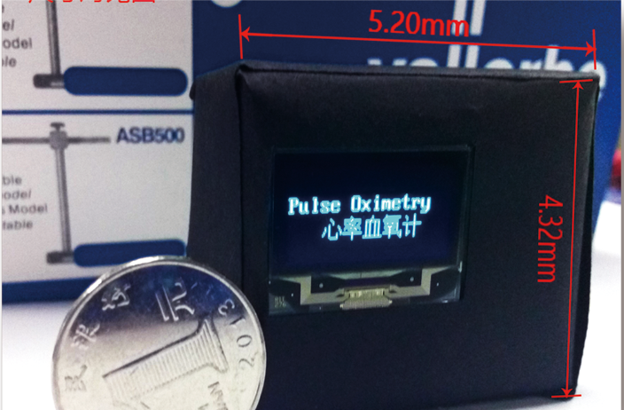
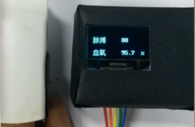
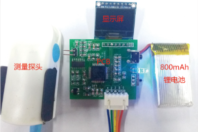

Electronic Science and Technology Competition in 2016 spring- Heart Rate Oximeter
Abstract: In this project, we made an instrument that could monitor heart rate and blood oxygen. We first looked at the relevant literature and got the principle of measuring heart rate and blood oxygen, and then designing circuits and related components, and finally packaging. After testing, our final product can accurately, quickly and stably measure heart rate values, about blood oxygen, because of individual differences, in a small number of experimental individuals, it is difficult to be accurate. At last, we won second grade in this competition. Theory: Our device uses red and infrared light as the source of emission, and continues to emit light for several seconds, respectively. According to the intensity of reflected light, the measurement results are obtained through signal analysis. Based on the pulsation of the finger blood capillary, the reflection of the light is different, which can be recognized by the data obtained, and then the heart rate is obtained. Based on the principle that the absorption rate of red and infrared light is different between oxygenated hemoglobin and non-oxygenated hemoglobin, and using Beer-lambert law to calculate, the accurate blood oxygen data can be calculated. Details:  Demo Video:Normal test:Shaking test: |